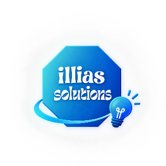
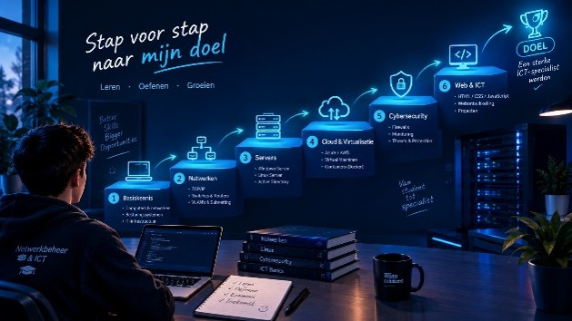

Servers & Netwerken
Ik leer hoe netwerken en servers worden beheerd en beveiligd.

Hallo! Ik ben Illias Geeraers, 22 jaar en studeer Systeem- en Netwerkbeheer aan de AP Hogeschool. Tijdens mijn opleiding leer ik over netwerken, systemen, servers, Linux en ICT-infrastructuur.
Mijn doel is om mijn tweejarige graduaat succesvol af te ronden en daarna door te stromen naar een bachelor Cybersecurity.
Daarnaast heb ik een sterke interesse in laptops en pc's. Ik werk graag met hardware, het installeren en configureren van systemen en het oplossen van technische problemen.
Ik leer hoe netwerken en servers worden beheerd en beveiligd.

Ik wil mij verder ontwikkelen binnen de IT en cybersecurity.
Ik vind het leuk om zelf websites te bouwen en te ontdekken hoe alles achter de schermen werkt. Met HTML en andere webtechnologieën leer ik mijn ideeën om te zetten in gebruiksvriendelijke websites.
Bekijk mijn portfolio